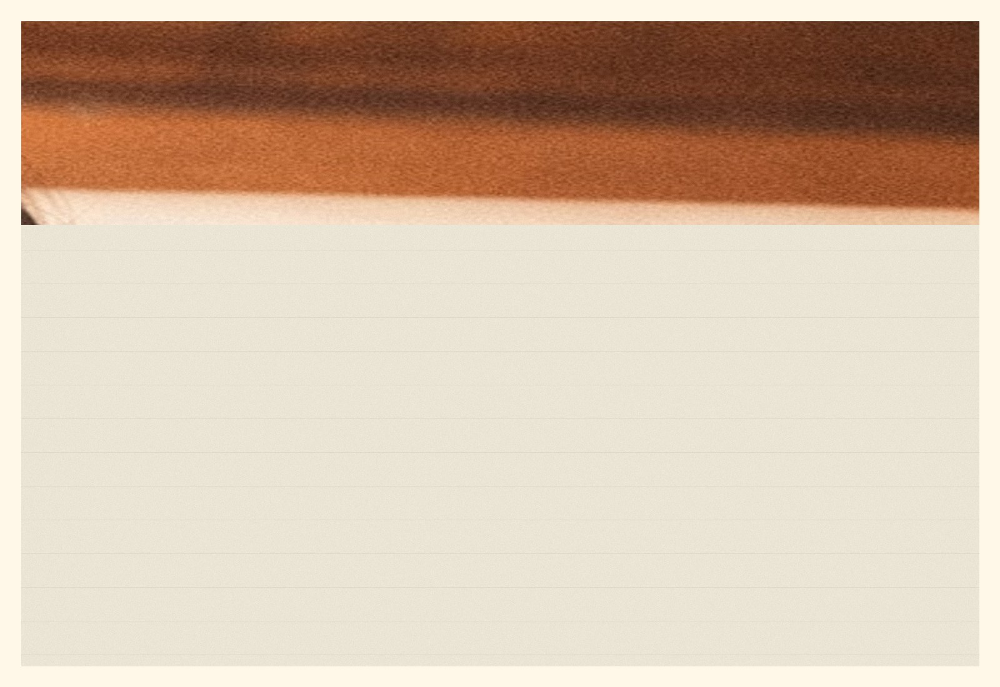
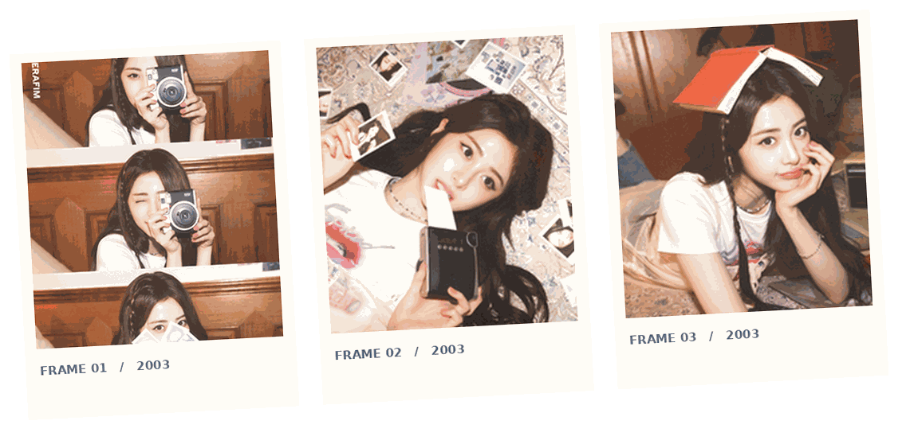

< DESKTOP / LE SSERAFIM03 / 05 PHOTO MEMORY
FROMTHE START.처음부터 지금까지 / A LITTLE TIME CAPSULE

PLAY MEMORY 0001 PLAY >
VOL. 03 / FROM THE START
Save this little moment?
A camera flash, a warm room, and the beginning of everything.
YUNJIN / ALWAYS IN FRAME
MEMORY STATUS: SAVED
Four snapshots. Tap to open, or drag a photo into the scene.
XP RESTORE